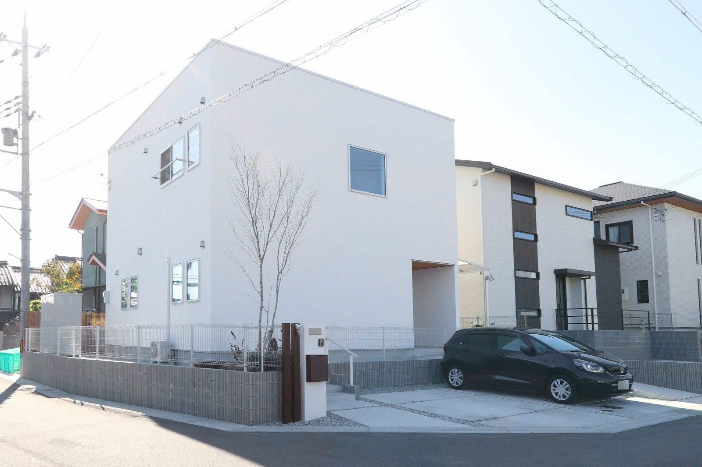
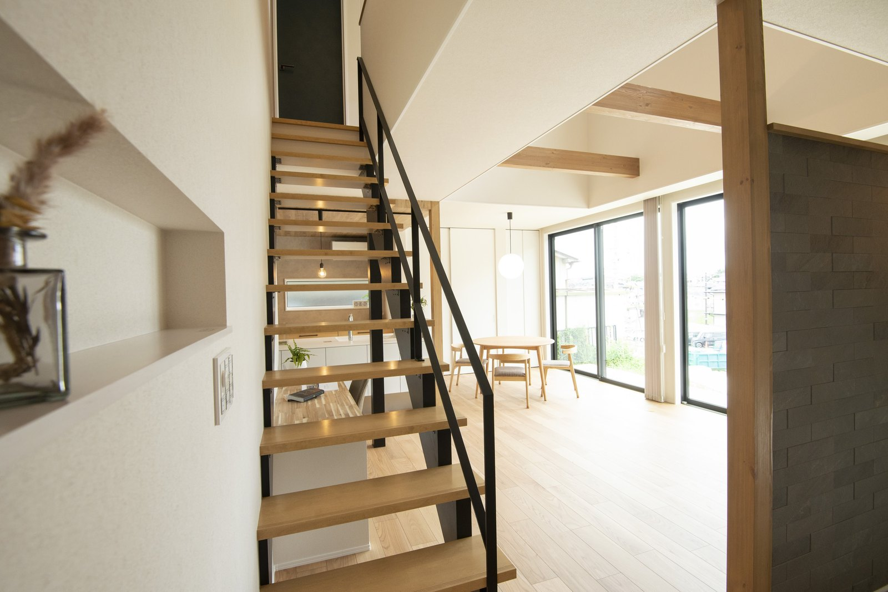

土地探しは、家づくり最初にして最大の難関です。
土地が決まれば、予算もご近所も日当たりも決まります。
私たちが歩いている順番を、そのままお伝えします。
おすすめの順番は、この6つ
④の試算を、不動産会社に頼まないほうがいい理由
意地悪ではありません。役割が違うだけです。
不動産会社の仕事は、土地を売ること。
「この土地なら建物にいくらかかるか」までは見ていません。
住宅会社に頼むと、家を建てるお金をもれなく拾い出します。
差が出るのは、土地代には出てこない費用です。
| 出やすい費用 | どんな土地で出るか |
|---|---|
| 造成・擁壁 | 高低差のある土地、古い擁壁のある土地 |
| 地盤改良 | もとが田んぼ・池・埋め立ての土地など。調査するまで分かりません |
| 上下水道 | 前面道路に管が来ていない土地。距離が長いほど高くなります |
| 解体・伐採 | 古家付き、長く空いていた土地 |
| 道路づけ | 間口が狭い、旗竿地、私道に接している土地 |
安い土地には、たいてい理由があります。
その理由が造成や地盤なら、浮いたお金は工事に消えます。
だから、土地代ではなく総額で比べる。

その土地で「建てられるか」を、必ず見てもらう
候補地では、このあたりを確認しています。
- 希望する家が建てられる地域か。用途地域、高さ制限、市街化調整区域か。
- 大がかりな工事が要らないか。高低差、擁壁、地盤、上下水道。
- 災害のリスク。ハザードマップで浸水・土砂災害の想定を見ます。
- 日当たりと風通し。将来、南に建物が建たないか。
- 音・におい・ご近所の様子。図面には出てきません。

窓の位置は、土地を見てから決めるのがいちばんです。
「土地選びハイ」に注意
やっと良い土地に出会うと、気持ちが前のめりになります。
これを「土地選びハイ」と呼んでいます。
総額を確かめないまま、申し込んでしまう。
④と⑤は、どれだけ急いでいても飛ばさないでください。
100点の土地は、出ません
すべての条件を満たす土地は、まず出てきません。
譲れない条件を3つに絞る。
あとは設計でなんとかなることが多いです。
高低差を活かし、景色を楽しむお住まいにした例もあります（建築実例10：絶景を望む、高台の立地を活かした家）。
よくあるご質問
まだ土地がありません。相談に行ってもいいですか？
もちろんです。
ご希望とご予算から、月々の返済も含めた資金計画を先に組みます。
予算の考え方は注文住宅の予算の決め方にもまとめています。
他社で紹介された土地でも見てもらえますか？
はい。見に行きます。費用はいただきません。
当社でお建てにならなくても構いません。
地元の土地のことはお伝えできます。
土地の価格交渉は、してもらえるのですか？
根拠のある交渉はできます。
周辺の相場、造成費用、境界や越境の状態。
こうした理由があってはじめて、話し合いになります。
建てる会社が決まっていないと、土地は紹介してもらえませんか？
そんなことはありません。
ただ、資金計画ができて「すぐ動ける」方には、不動産会社も情報を出しやすいのが実際です。

奈良の工務店シバ・サンホームで、初めての家づくりに伴走しています。土地とお金のことこそ正直に。モットーはスピード・誠実さ・楽しさ。